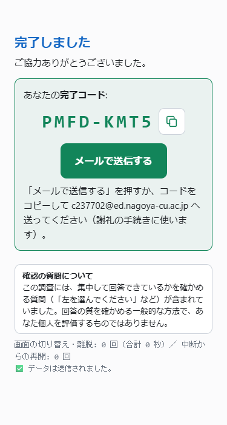
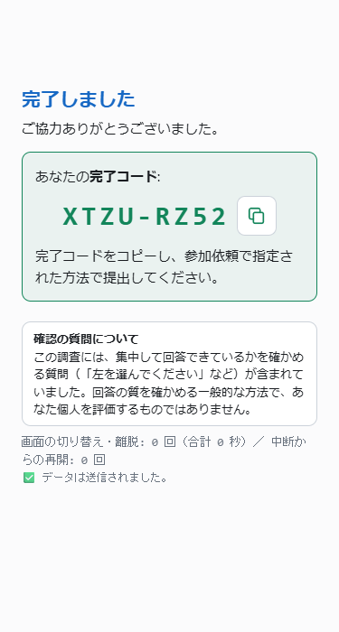

完了画面の案内を「完了コードをコピーし、参加依頼で指定された方法で提出してください。」へ変更し、「メールで送信する」ボタンを外しました。募集方法に応じた提出先は参加依頼で案内します。
画面サイズ mini相当 · 375 × 700iPhone 17相当 · 402 × 759Pro Max相当 · 440 × 841


前後とも、最終送信の受領応答をローカルで再現して到達した通常表示です。氏名・同意・完了コードの生成、受領、復元・保存形式・標準の参加URLは変更していません。
コピー成功・失敗時の4サイズ確認 ／ 固定の全説明確認ページ ／ 現行3サイズの全画面一覧